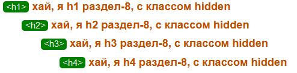

Текущая спецификация, когда писалось статья HTML Living Standard — Last Updated 8 December 2023
поскольку whatwg создает и обновляет стандарт html, а подтверждает и сертифицирует стандарт W3C, тогда validator.w3.org максимально регламентирует текущую спецификацию whatwg
Тогда довольно интересная вещь получается, когда мы выбираем чек бокс outline мы может увидеть под всем блоком уведомлений (Info, Warning, Error) и блоком Source мы увидеть блок Outline и тут начинается довольно интересное наблюдение с группирование и вложенностями h1-h6
asd
asd
asd
вариант - 1
вариант - 2, каждый дочерний элемент обернутый в section и вложен друг в друга
начало
конец
